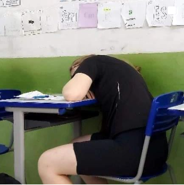
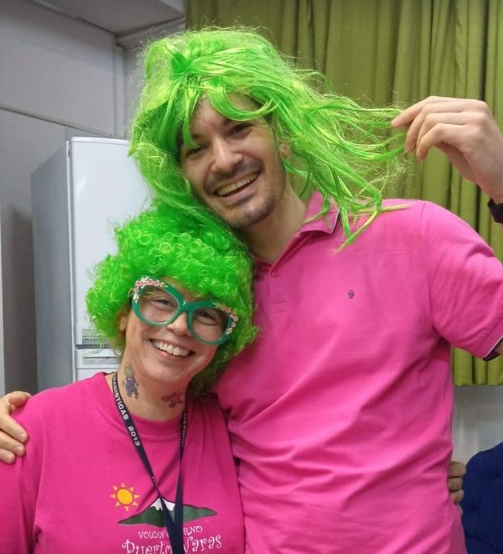
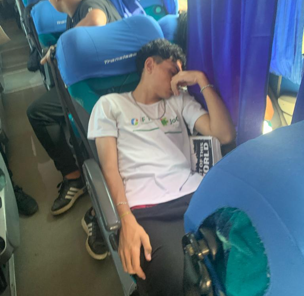

Malu de PG1 é flagrada tirando um ronco durante a aula

Tio Luiz é flagrado procurando alunos gazeando em salas de aula
"Tá em aula filhão?" - disse ele

Cabelo verde vira tendência entre os professores do ifpr - disse professora Isis

Pedro de info 2 é flagrado dormindo no ônibus durante o passeio do professor Leandro